À proximité
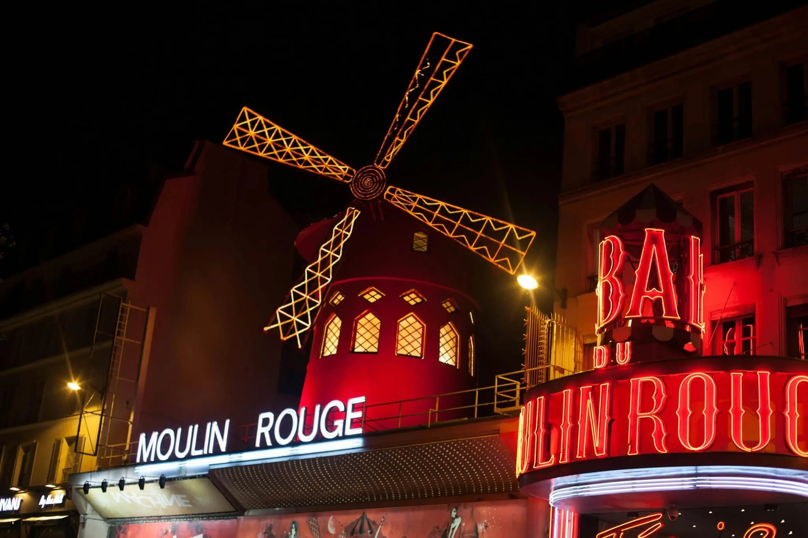
Le moulin rouge
Symbole emblématique de la nuit parisienne, le Moulin Rouge fait rêver depuis 1889. Entre plumes, strass et paillettes, ce cabaret mythique incarne l’élégance, la fête et l’esprit artistique de Montmartre.
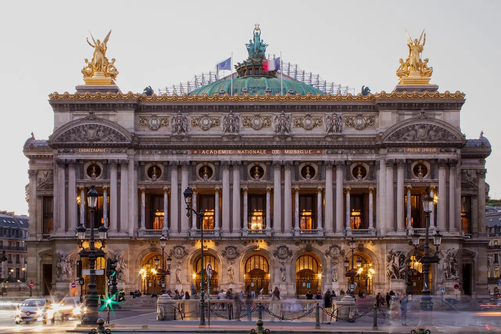
Le palais Garnier
Icône du raffinement parisien, le Palais Garnier fascine depuis 1875. Entre dorures, fresques somptueuses et escalier monumental, ce chef-d’œuvre du XIXᵉ siècle incarne l’opulence, la musique et l’art à la française.
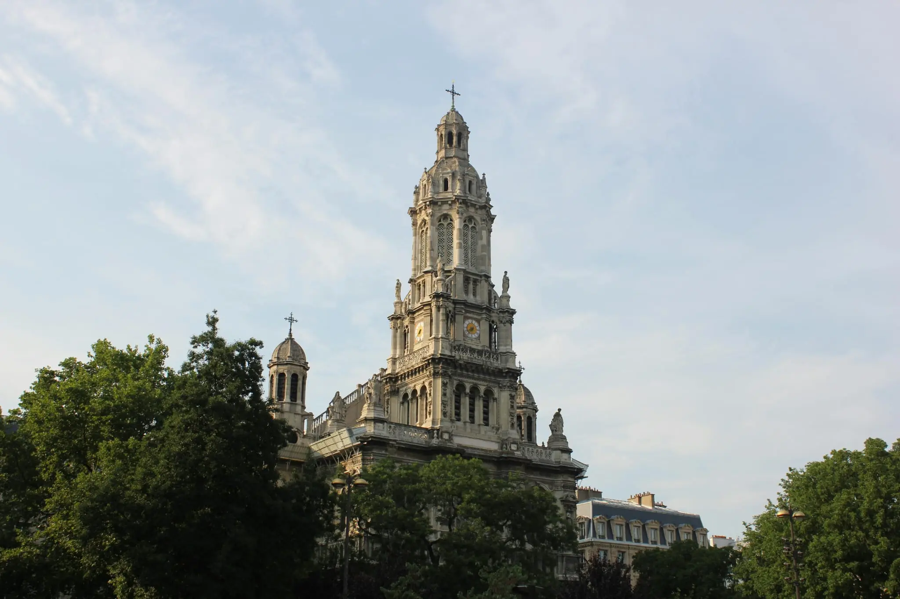
Eglise de la Ste Trinité
L'Église de la Sainte-Trinité, joyau néo-Renaissance du 9ème arrondissement, domine la place d'Estienne d'Orves depuis 1867 avec son imposante façade et son célèbre orgue Cavaillé-Coll.
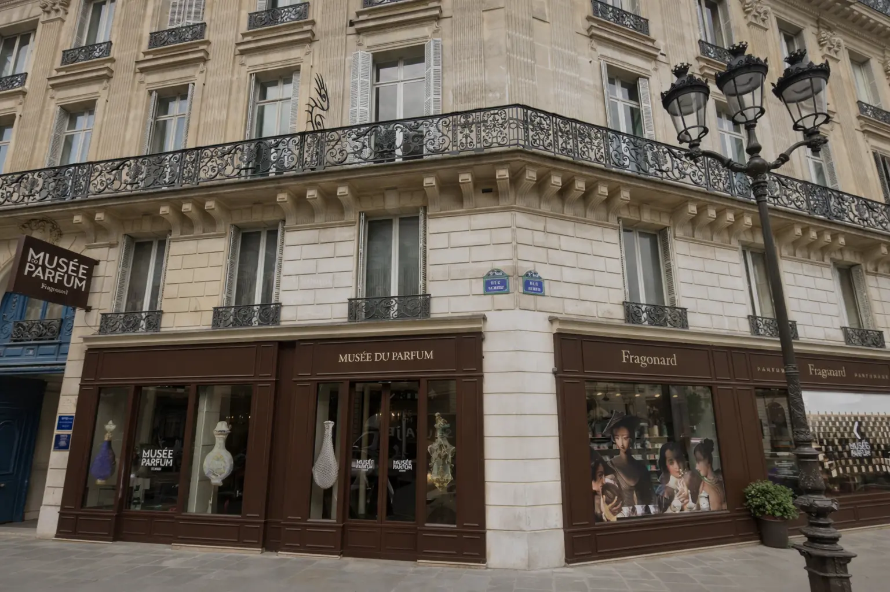
Musée du parfum Fragonard
Le Musée du Parfum Fragonard, installé dans un somptueux hôtel particulier près de l'Opéra Garnier, dévoile 3000 ans d'histoire de la parfumerie Fragonard Museum of Perfume à travers une collection exceptionnelle de flacons anciens et d'objets d'art. Entrée gratuite !
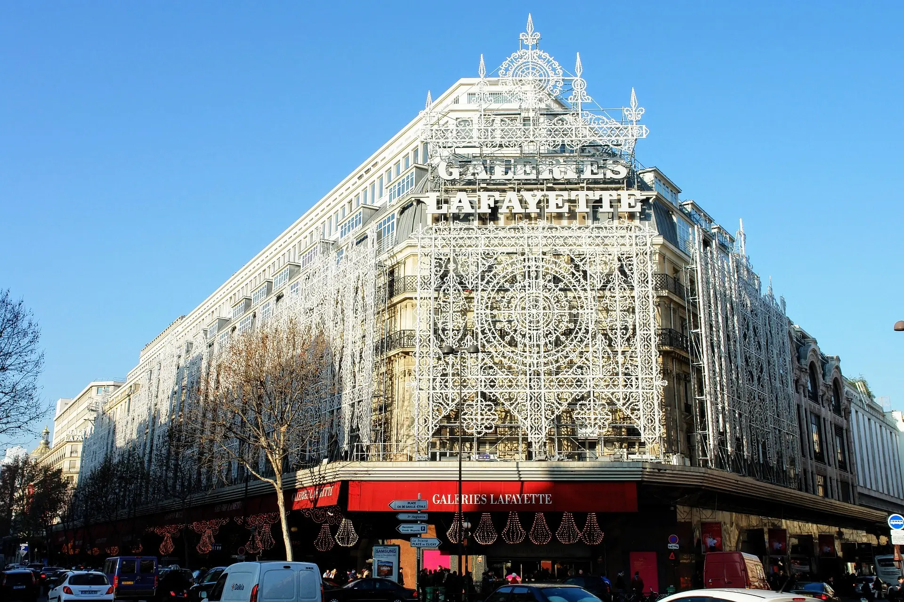
Les galeries Lafayette
Les Galeries Lafayette, temple parisien du shopping de luxe depuis 1912, vous éblouissent avec leur coupole Art Nouveau classée monument historique et leur terrasse panoramique offrant une vue imprenable sur tout Paris. Entrée libre !
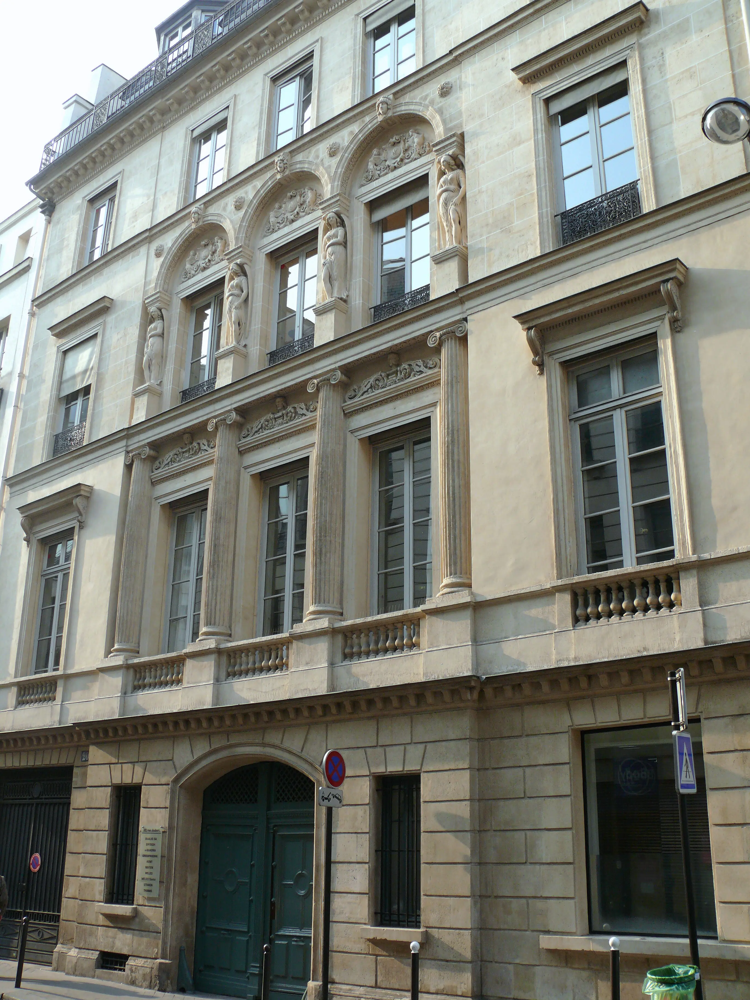
La Maison Bélanger
La Maison Bélanger, joyau architectural du 18ème siècle au 20 rue Joubert, abrite aujourd'hui la prestigieuse joaillerie Chaumet. Ce lieu chargé d'histoire vit passer Frédéric Chopin qui y rendit son dernier souffle en 1849.
Photo : MOSSOT / CC BY 3.0
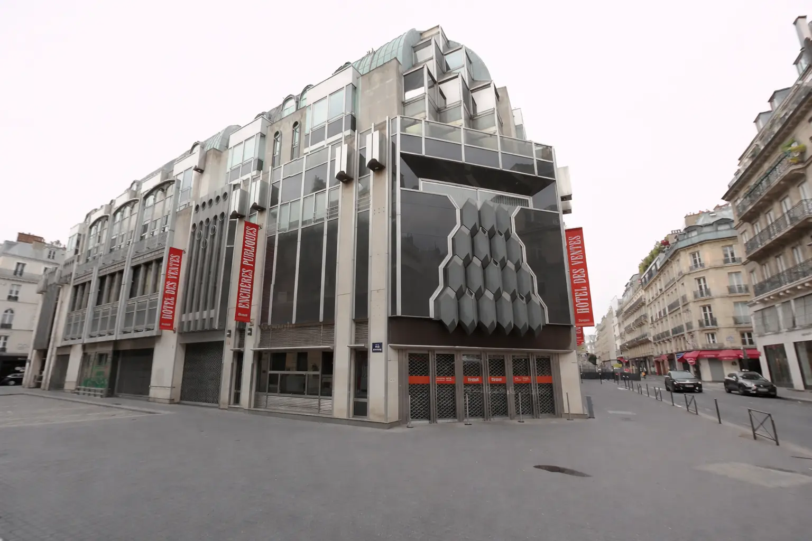
L'hotel Drouot
L'Hôtel Drouot est la plus célèbre salle des ventes aux enchères de France, nichée au cœur du 9ème arrondissement depuis 1852. Véritable temple de l'art et des antiquités, il accueille chaque année des milliers de vacations où tableaux, bijoux et objets rares trouvent preneurs. Une adresse mythique à deux pas du studio, pour les amateurs de trésors et de belles découvertes.
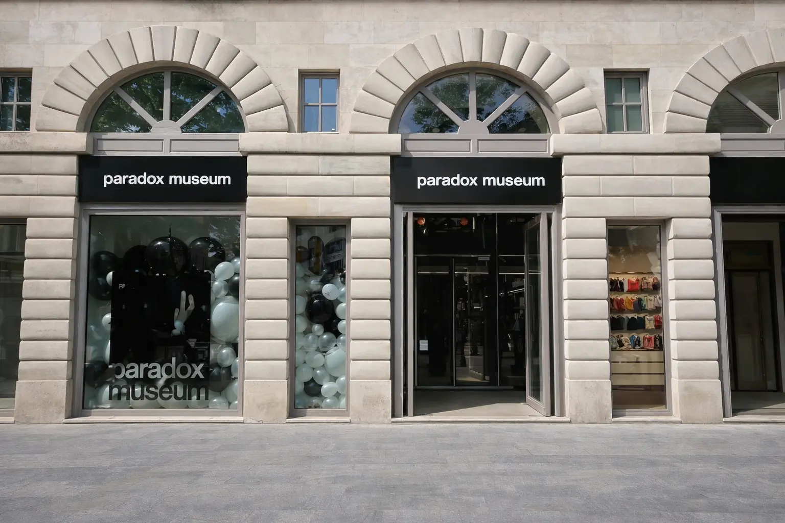
Le Paradox Museum
Le Paradox Museum Paris est un musée interactif unique où illusions d'optique, installations surprenantes et expériences sensorielles défient la réalité à chaque pas. Jouant avec vos sens et votre perception, il transforme chaque visiteur en acteur de ses propres illusions Une sortie décalée, ludique et mémorable à deux pas du studio !
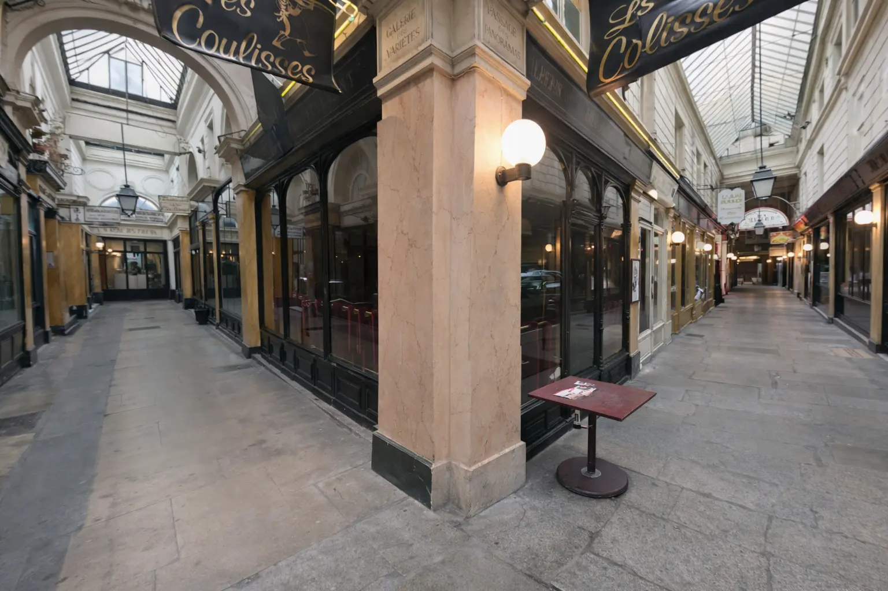
Passage couvert de Paris
Les Passages Couverts de Paris sont de véritables joyaux du XIXème siècle, témoins d'une époque où le shopping se vivait à l'abri des intempéries sous des verrières en fer forgé. Galerie Vivienne, Passage des Panoramas, Passage Jouffroy... chacun révèle son caractère unique entre boutiques vintage, librairies anciennes et cafés d'époque. Une promenade hors du temps que vous ne pourrez pas manquer !
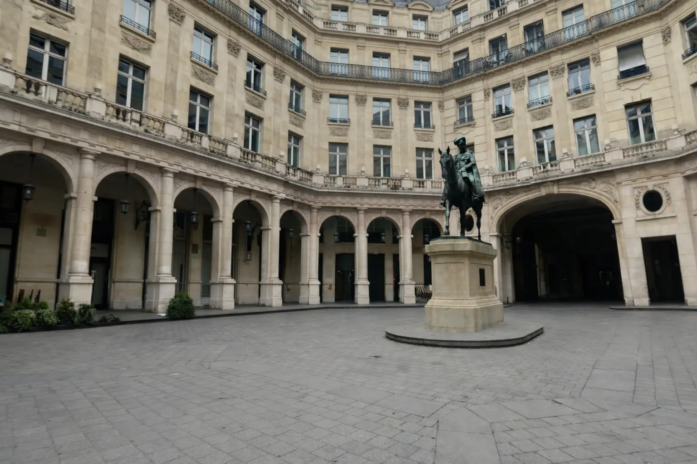
La Place Édouard VII
La Place Édouard VII est un square paisible et élégant au cœur du 9ème arrondissement, dominé par une statue royale et bordé d'un théâtre historique. Un havre de calme à quelques minutes à pied du studio, idéal pour une pause entre deux visites.
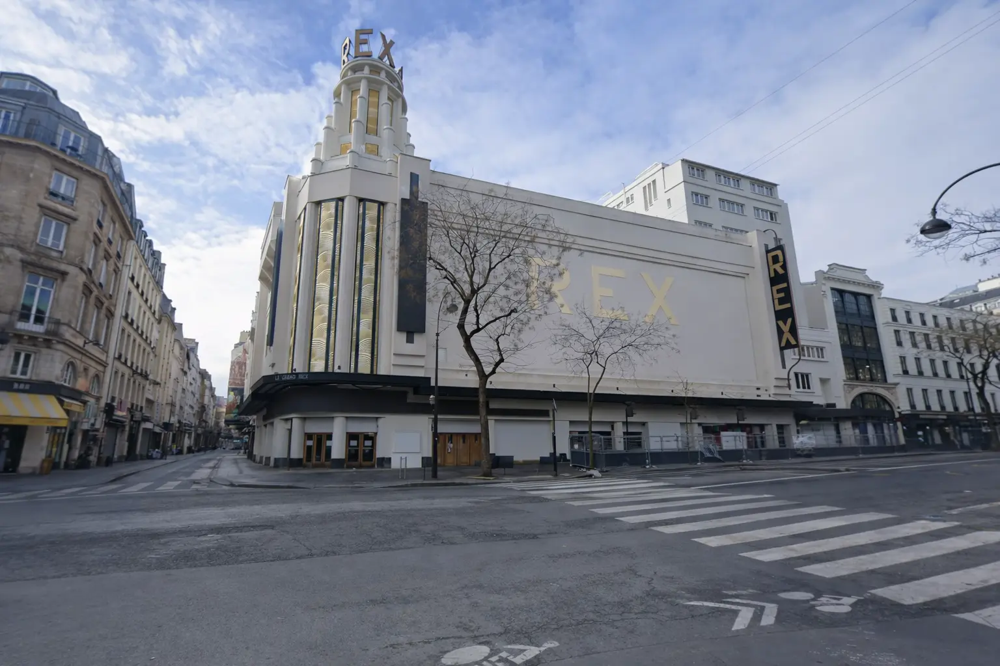
Le Grand Rex
Le Grand Rex est le plus grand cinéma d'Europe, véritable monument Art Déco inauguré en 1932. Avec sa façade lumineuse et sa salle aux décors somptueux, il fait partie du patrimoine culturel parisien. Une expérience unique bien au-delà du simple cinéma !
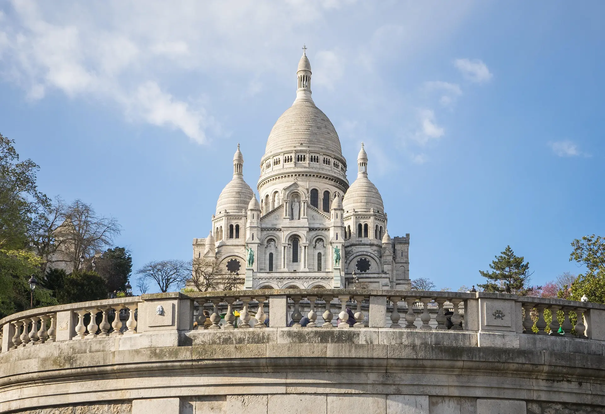
Montmartre
Montmartre, c'est Paris dans toute sa bohème et sa magie. Entre la basilique du Sacré-Cœur dominant la ville, les ruelles pavées des artistes et la Place du Tertre animée, la Butte offre une atmosphère incomparable. Un incontournable à découvrir le temps d'une balade inoubliable.
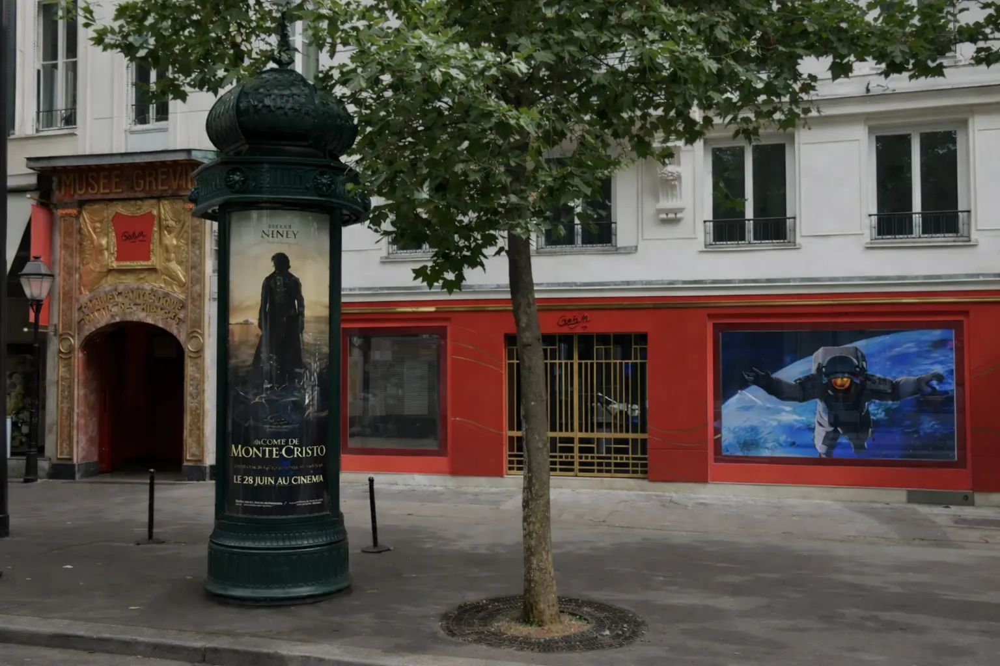
Le Musée Grévin
Le Musée Grévin, institution parisienne depuis 1882, fait revivre les plus grandes célébrités en cire avec un réalisme saisissant. Stars mondiales, personnalités historiques et icônes de la culture s'y côtoient dans des décors spectaculaires. Une expérience ludique et fascinante pour toute la famille !